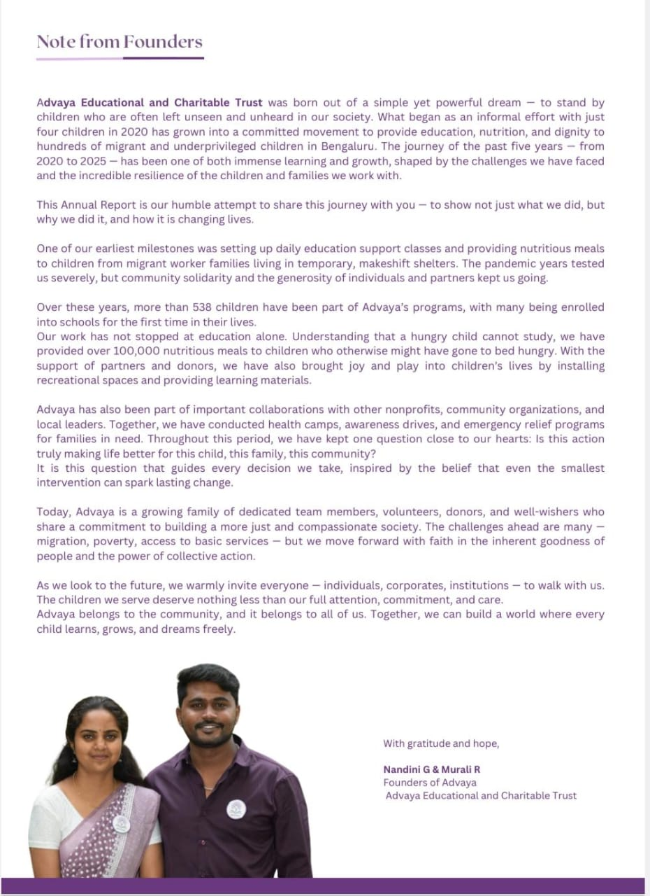

The vision and commitment behind Advaya Education & Charitable Trust.
Advaya Educational and Charitable Trust was born out of a simple yet powerful dream — to stand by children who are often left unseen and unheard in our society. What began as an informal effort with just four children in 2020 has grown into a committed movement to provide education, nutrition, and dignity to hundreds of migrant and underprivileged children in Bengaluru. The journey of the past five years — from 2020 to 2025 — has been one of both immense learning and growth, shaped by the challenges we have faced and the incredible resilience of the children and families we work with.
This Annual Report is our humble attempt to share this journey with you — to show not just what we did, but why we did it, and how it is changing lives.
One of our earliest milestones was setting up daily education support classes and providing nutritious meals to children from migrant worker families living in temporary, makeshift shelters. The pandemic years tested us severely, but community solidarity and the generosity of individuals and partners kept us going.
Over these years, more than 535 children have been part of Advaya's programs, with many being enrolled into schools for the first time in their lives. Our work has not stopped at education alone. Understanding that a hungry child cannot study, we have provided over 100,000 nutritious meals to children who otherwise might have gone to bed hungry. With the support of partners and donors, we have also brought joy and play into children's lives by installing recreational spaces and providing learning materials.
Advaya has also been part of important collaborations with other nonprofits, community organizations, and local leaders. Together, we have conducted health camps, awareness drives, and emergency relief programs for families in need. Throughout this period, we have kept one question close to our hearts: Is this action truly making life better for this child, this family, this community?
It is this question that guides every decision we take, inspired by the belief that even the smallest intervention can spark lasting change.
Today, Advaya is a growing family of dedicated team members, volunteers, donors, and well-wishers who share a commitment to building a more just and compassionate society. The challenges ahead are many — migration, poverty, access to basic services — but we move forward with faith in the inherent goodness of people and the power of collective action.
As we look to the future, we warmly invite everyone — individuals, corporates, institutions — to walk with us. The children we serve deserve nothing less than our full attention, commitment, and care. Advaya belongs to the community, and it belongs to all of us. Together, we can build a world where every child learns, grows, and dreams freely.

With gratitude and hope,
Founders of Advaya
Advaya Educational and Charitable Trust